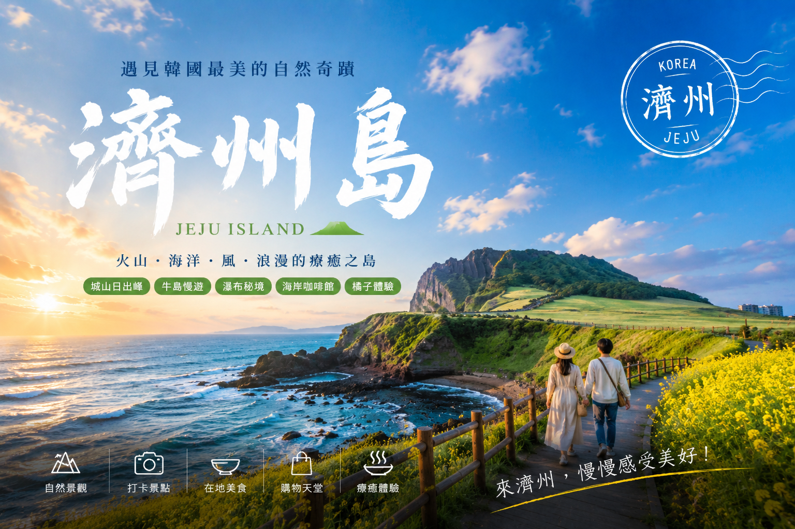
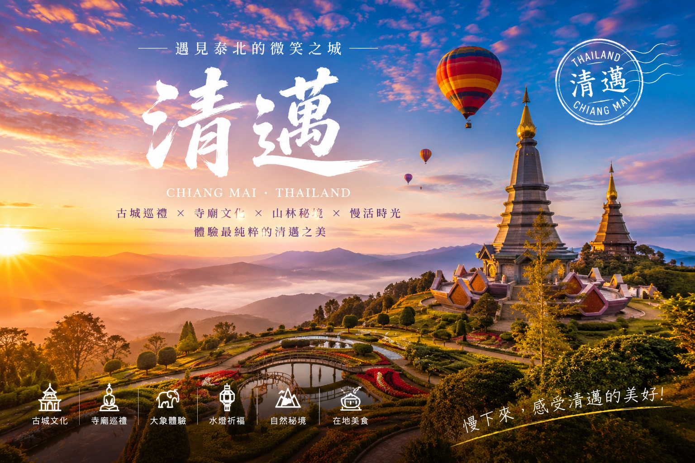
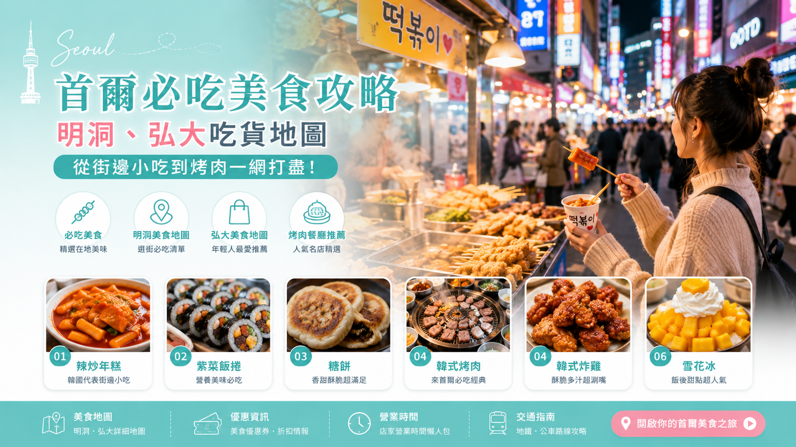
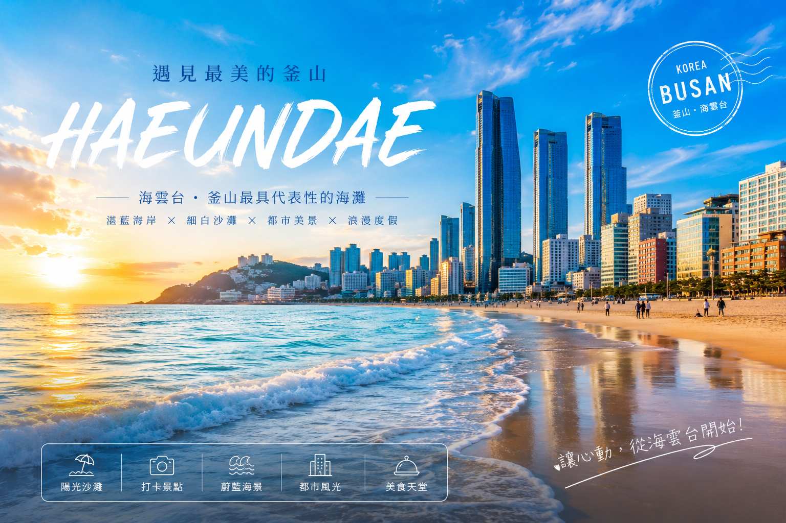
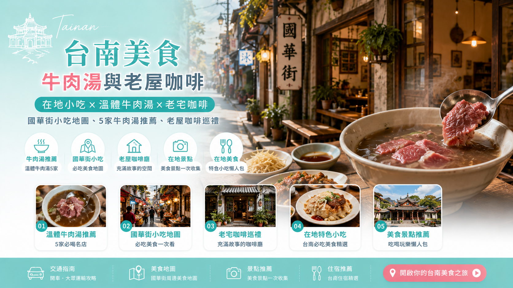

日本自由行 京都寺廟與楓紅散步地圖｜清水寺、金閣寺、伏見稻荷3大路線 Travel Lab2026-05-13 千年古都的靜謐之美，清水寺的木造舞台、金閣寺的金色倒影、伏見稻荷的千本鳥居，3條散步路線帶你走進京都最動人的風景。 繼續閱讀 →
 韓國自由行 濟州島自駕環島3天2夜攻略｜城山日出峰、牛島、漢拏山 Travel Lab2026-05-13 韓國最大島，開車繞一圈看火山地形、草原牧場、絕美海景，還有必吃的黑豬肉烤肉與海鮮鍋。 繼續閱讀 →
台灣旅遊 墾丁三天兩夜海景與夜市攻略｜南灣戲水、龍磐看海、夜市吃爆 Travel Lab2026-05-13 國境之南的陽光沙灘，南灣衝浪、龍磐公園看海、鵝鑾鼻燈塔打卡，晚上墾丁大街夜市一路吃到飽。 繼續閱讀 →
 東南亞自由行 清邁7天數位遊牧指南｜遠端工作咖啡廳、長租公寓、月費參考 Travel Lab2026-05-13 帶著筆電去泰國工作！清邁是亞洲數位遊牧大本營，低物價、好咖啡、慢生活的遠端天堂。 繼續閱讀 →
 韓國自由行 首爾必吃美食攻略｜5大必吃、換錢教學、T-money交通卡 Travel Lab2026-05-13 韓式烤肉、醬蟹、炸雞、部隊鍋、廣藏市場小吃，首爾5大必吃美食一次收錄，附換錢攻略和T-money教學。 繼續閱讀 →
台灣旅遊 花東三天兩夜攻略｜太魯閣步道、池上自行車道、海景民宿 Travel Lab2026-05-13 台灣最美的東海岸線，太魯閣峽谷的鬼斧神工、池上稻田的自行車漫遊、太平洋海景的第一排民宿。 繼續閱讀 →
日本自由行 關西交通票券完全指南｜JR Pass、周遊卡、ICOCA怎麼選最省？ Travel Lab2026-05-13 關西交通票券種類多到眼花？這篇幫你整理JR Pass、關西周遊卡、ICOCA的適用場景，附省錢決策樹。 繼續閱讀 →
 韓國自由行 釜山海雲台膠囊列車預約教學｜海景咖啡廳、廣安里住宿推薦 Travel Lab2026-05-13 釜山超美海景咖啡廳清單，海雲台膠囊列車預約攻略，還有廣安里看海住宿高CP值推薦。 繼續閱讀 →
 台灣旅遊 台南美食攻略｜5家必喝牛肉湯、國華街小吃地圖、老屋咖啡 Travel Lab2026-05-13 在地人帶路！國華街必吃小吃地圖與充滿故事的老宅文青咖啡廳，台南美食一日遊這樣排。 繼續閱讀 →
日本自由行 北海道冬季賞雪攻略｜5大必去景點、禦寒穿搭、溫泉推薦 Travel Lab2026-05-13 小樽運河、札幌雪祭、函館百萬夜景，冬天去北海道的禦寒穿搭與自駕心得，附5大溫泉推薦。 繼續閱讀 →